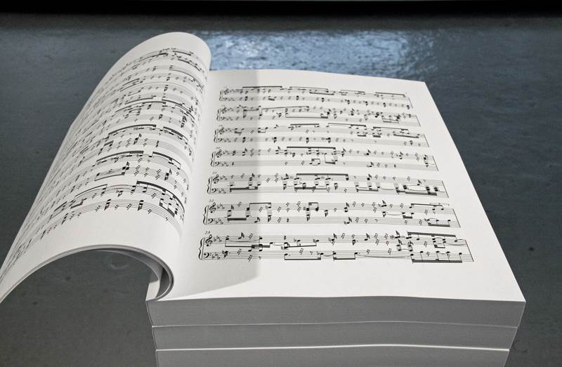

WELL-TEMPERED CLAVIER
2013, music score books
WELL-TEMPERED CLAVIER is produced from the collection of music scores, "Well-tempered Clavier Book 1" composed and complied by Johann Sebastian Bach in 1722 and edited by Carl Czerny in 1837.
"Well-Tempered Clavier Book 1" consists of 48 short music pieces, 24 preludes and 24 fugues in all 24 major and minor keys in ascending order. I played "Well-Tempered Clavier Book 1" in order, from Prelude #1 in C major to Fuga #24 in B minor, on a MIDI keyboard connected to scorewriter, music notation software, which automates the task of writing and encrypting sheet music. I repeated the process of playing the entire book of "Well-Tempered Clavier Book 1" and produced 72 versions of WELL-TEMPERED CLAVIER.
Each book is distinct from one another, even though all the books are based on the same music score. Since I am not a skilled keyboard player, the music score written by a scorewriter embodies every mistake and stutter I made.
"Well-Tempered Clavier Book 1" consists of 48 short music pieces, 24 preludes and 24 fugues in all 24 major and minor keys in ascending order. I played "Well-Tempered Clavier Book 1" in order, from Prelude #1 in C major to Fuga #24 in B minor, on a MIDI keyboard connected to scorewriter, music notation software, which automates the task of writing and encrypting sheet music. I repeated the process of playing the entire book of "Well-Tempered Clavier Book 1" and produced 72 versions of WELL-TEMPERED CLAVIER.
Each book is distinct from one another, even though all the books are based on the same music score. Since I am not a skilled keyboard player, the music score written by a scorewriter embodies every mistake and stutter I made.